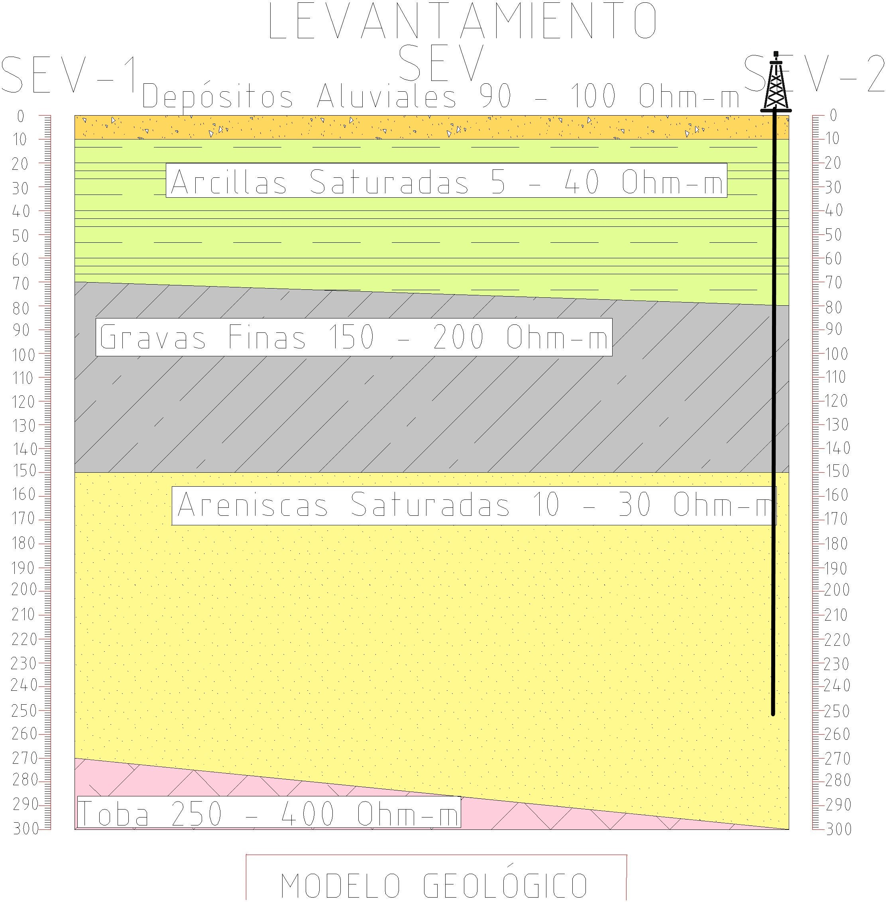
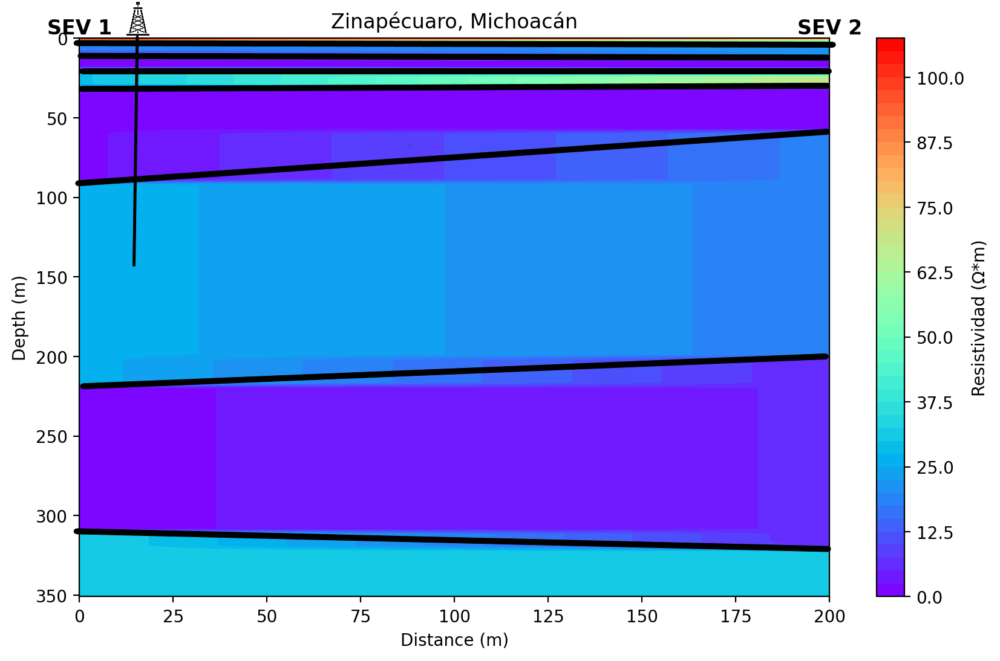
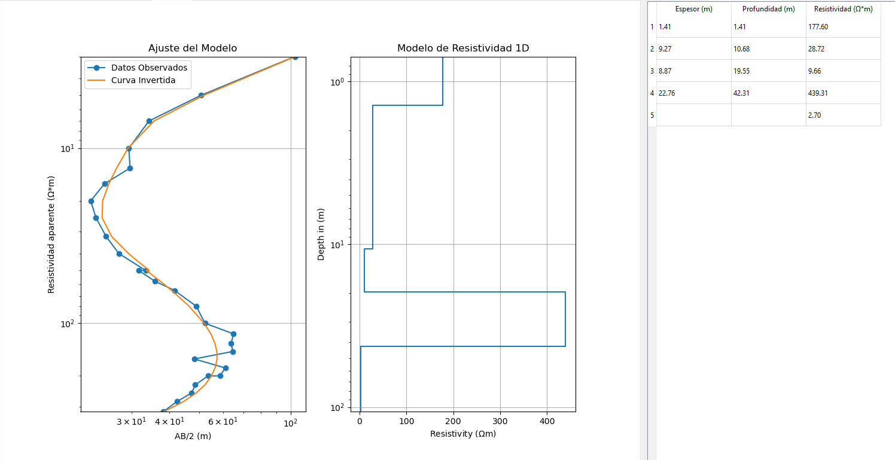
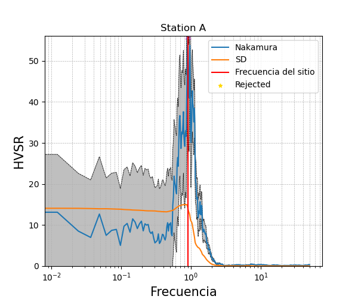
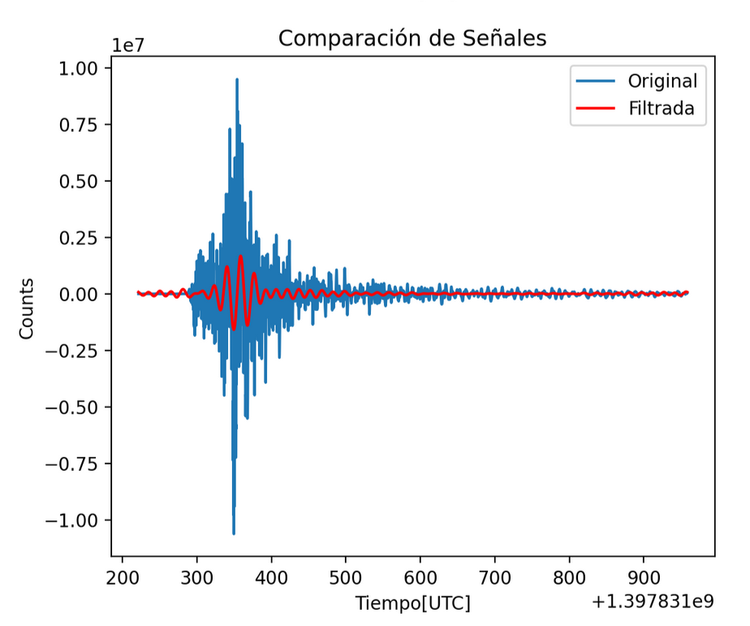
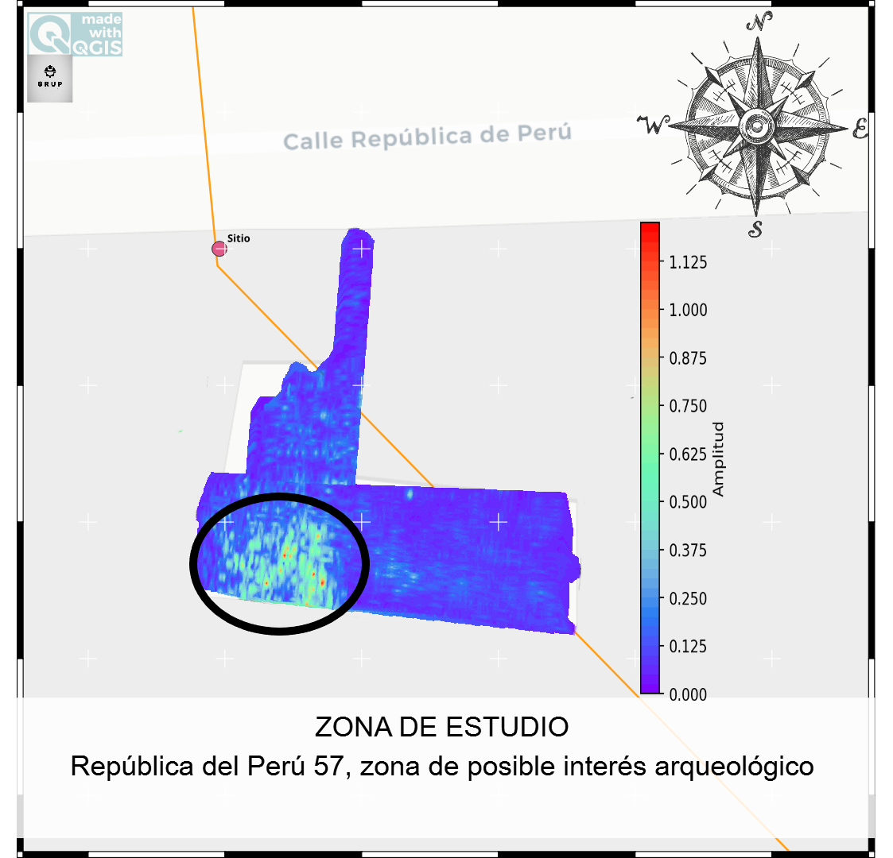
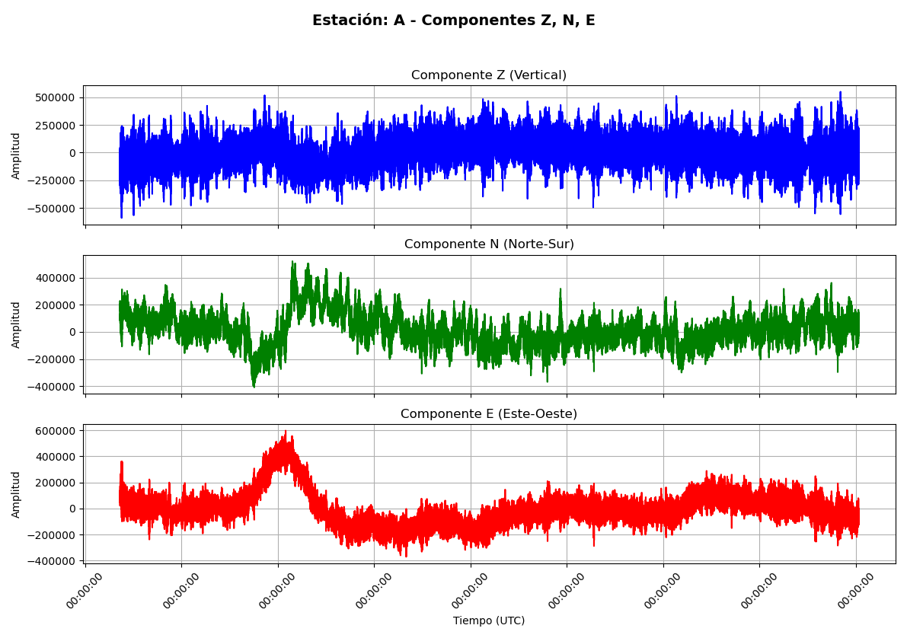
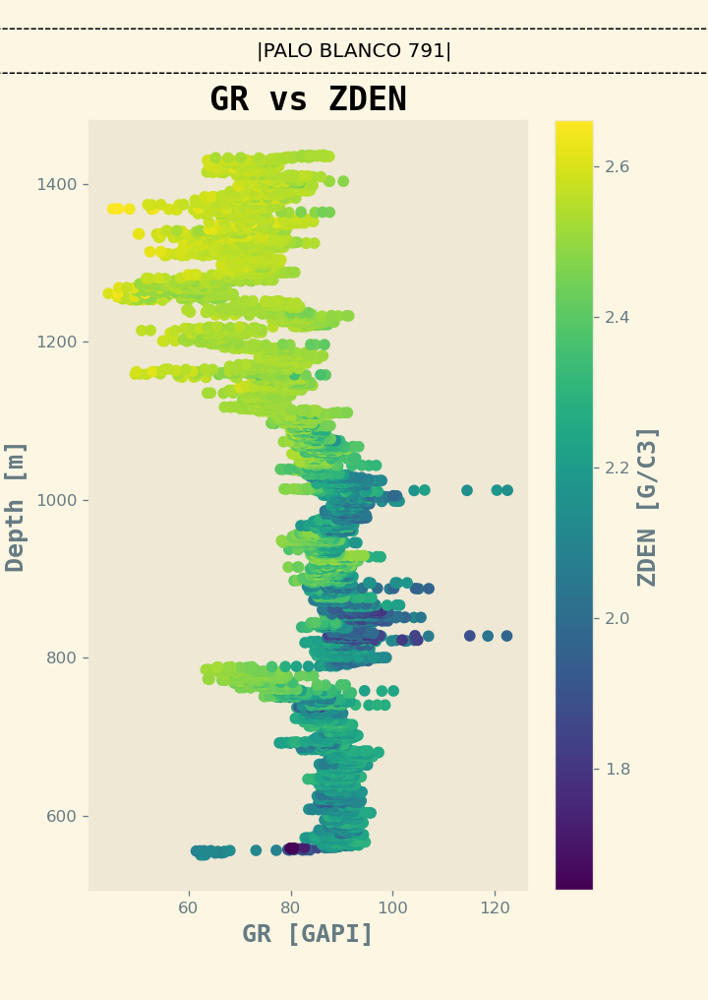
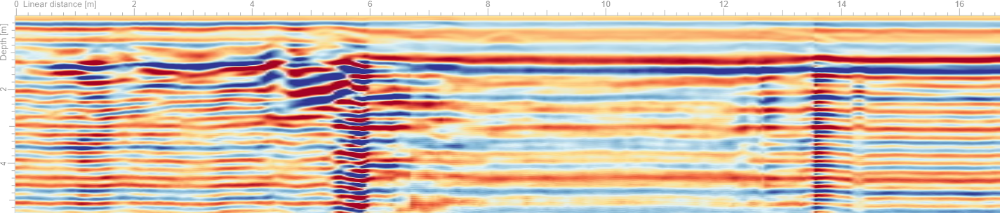

Geological Interpretation
Profile interpreted in LibreCAD showing geological layers and structures.
Technical Recommendations
Details on perforation techniques and subsurface evaluation.
Vertical Electrical Sounding (VES)
Inversion using Occam's razor model to interpret subsurface resistivity.
HVSR Analysis
HVSR calculation using Nakamura’s method to estimate resonance frequencies.
Seismic Data Filtering
Python-designed filter to enhance frequencies near the corner frequency.
GIS Mapping
Maps designed in QGIS for spatial analysis and geophysical study visualization.
Signal Processing
Advanced signal processing techniques applied to geophysical data.
Well Logging
Analysis of geophysical well logs, showcasing density and gamma-ray data.
Ground Penetrating Radar (GPR)
Interpretation of subsurface structures using GPR profiles.
